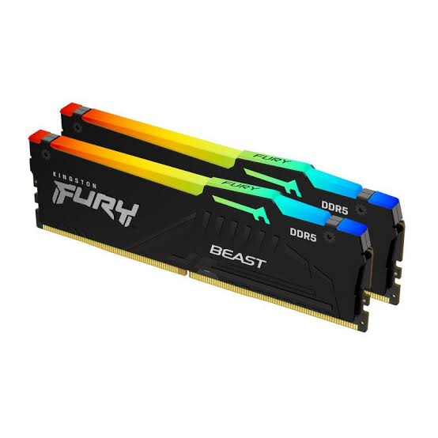
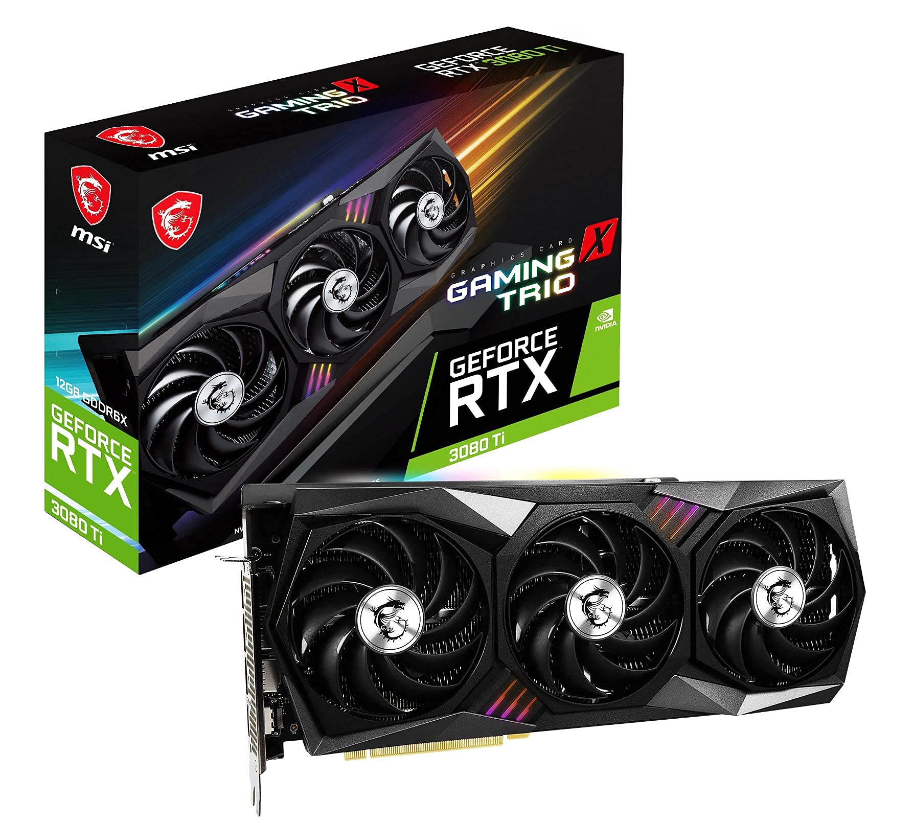
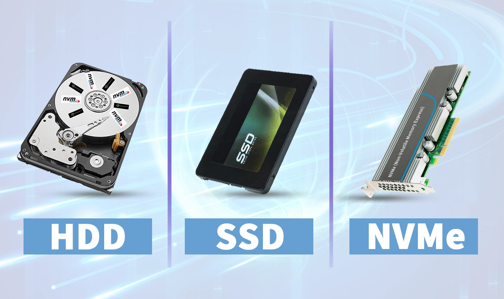
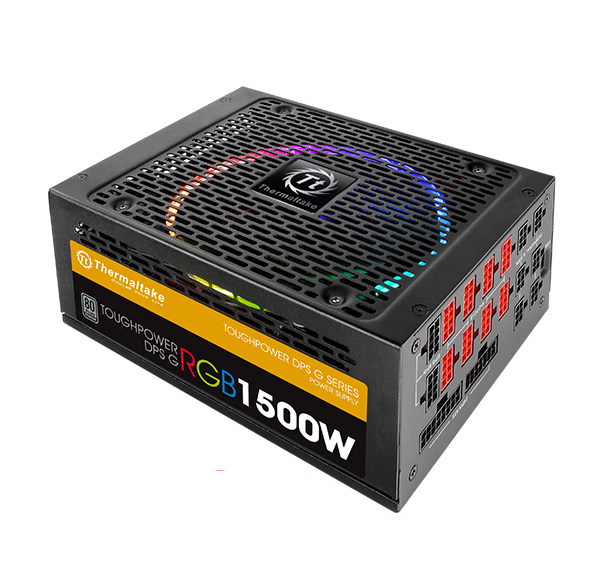

1. პროცესორი (CPU) - კომპიუტერის ცენტრალური ტვინი
პროცესორი (Central Processing Unit - CPU ანუ ცენტრალური გამომთვლელი პროცესორი) CPU, კომპიუტერის ყველაზე მნიშვნელოვანი ნაწილია, რომელიც მთლიანად პასუხისმგებელია მონაცემების გამოთვლასა და მართვაზე. როდესაც კომპიუტერში რაიმე პროგრამას ჩართავთ ან რაიმე მოქმედებას შეასრულებთ, სისტემა ინსტრუქციებს პირდაპირ პროცესორს უგზავნის. ისიც წამში მილიარდობით მათემატიკურ და ლოგიკურ ოპერაციას ასრულებს, იღებს საჭირო გადაწყვეტილებებს და შემდეგ შესაბამის ბრძანებებს აძლევს კომპიუტერის დანარჩენ კომპონენტებს. ფაქტობრივად, ნებისმიერი დავალება, რომელსაც მოწყობილობა ასრულებს, სწორედ პროცესორის გავლით მუშავდება, რის გამოც სისტემის საერთო სისწრაფე და ეფექტურობა პირდაპირ მის სიმძლავრეზეა დამოკიდებული.

როგორ მუშაობს პროცესორი? (მუშაობის ციკლი)
პროცესორი ყოველ წამში მილიარდობით ციკლს ასრულებს. თითოეული ინსტრუქციის დამუშავება 4 ძირითადი ეტაპისგან შედგება:
- Fetch (წამოღება): პროცესორი ოპერატიული მეხსიერებიდან (RAM) იღებს შემდეგ შესასრულებელ ბრძანებას.
- Decode (გაშიფვრა): ბრძანება იშიფრება პროცესორისთვის გასაგებ ორობით კოდში (0-ები და 1-ები).
- Execute (შესრულება): არითმეტიკულ-ლოგიკური მოწყობილობა (ALU) ასრულებს საჭირო გამოთვლას.
- Writeback (ჩაწერა): გამოთვლილი შედეგი ინახება მეხსიერებაში ან გაიგზავნება ეკრანზე/სხვა მოწყობილობაზე.
პროცესორის მთავარი მახასიათებლები
- ბირთვები (Cores): თანამედროვე პროცესორებს აქვთ რამდენიმე ფიზიკური ბირთვი (მაგ. 4, 8, 16 ან მეტი). თითოეული ბირთვი ფაქტობრივად ცალკეული მცირე პროცესორია. რაც უფრო მეტი ბირთვი აქვს სისტემას, მით უკეთესად შეუძლია მას ერთდროულად რამდენიმე მძიმე პროგრამის (Multi-tasking) გაშვება.
- ნაკადები (Threads / Hyper-Threading): ნაკადი, ანუ თრედი, არის პროცესორის ლოგიკური ბირთვი, რომელიც განსაზღვრავს, თუ რამდენი დავალების შესრულება შეუძლია სისტემას ერთდროულად. როდესაც პროგრამას ჩართავთ, ის პროცესორს აძლევს ინსტრუქციების ჯაჭვს, სწორედ ამ ჯაჭვს ეწოდება ნაკადი. ძველ პროცესორებში 1 ფიზიკურ ბირთვს მხოლოდ 1 ნაკადის მიღება და დამუშავება შეეძლო, თუმცა თანამედროვე ვირტუალიზაციის ტექნოლოგიებით, როგორიცაა Intel Hyper-Threading ან AMD SMT, 1 ფიზიკური ბირთვი უკვე 2 ნაკადს ამუშავებს. ეს ნიშნავს, რომ 8-ბირთვიან პროცესორს სისტემა მოიაზრებს როგორც 16-ნაკადიანს, რის წყალობითაც პროცესორი დაყოვნების გარეშე, პარალელურ რეჟიმში ასრულებს რამდენიმე პროგრამის დავალებას და კომპიუტერიც გაცილებით სწრაფად მუშაობს.
- ტაქტური სიხშირე (Clock Speed - GHz): ტაქტური სიხშირე, რომელსაც გიგაჰერცებში (GHz) ვზომავთ, აჩვენებს, თუ რას უდრის პროცესორის თითოეული ბირთვის მუშაობის ტემპი და რამდენ ოპერაციას ასრულებს ის ერთ წამში. მაგალითად, 4.0 GHz ნიშნავს, რომ ბირთვს შეუძლია წამში 4 მილიარდი ასეთი ციკლი გაატაროს. პროცესორებს, როგორც წესი, ორი ტიპის სიხშირე აქვთ: საბაზო, ანუ სტანდარტული რეჟიმი, რომლითაც ის ჩვეულებრივი დავალებებისას მუშაობს, და მაქსიმალური აჩქარება, როდესაც სისტემა ავტომატურად უმატებს სიმძლავრეს და იწურება ბოლო შესაძლებლობამდე, თუკი რთულ და მძიმე პროგრამას გავუშვებთ.
- ქეშ-მეხსიერება (Cache - L1, L2, L3): ქეშ-მეხსიერება, რომელიც L1, L2 და L3 დონეებად იყოფა, პროცესორში ჩაშენებული ულტრასწრაფი მეხსიერებაა, რომლის მთავარი დანიშნულებაც სისტემის მუშაობის მაქსიმალურად დაჩქარებაა. ვინაიდან ჩვეულებრივი ოპერატიული მეხსიერებიდან (RAM) ინფორმაციის წამოღებას შედარებით მეტი დრო სჭირდება, პროცესორი ყველაზე ხშირად გამოყენებად მონაცემებსა და ინსტრუქციებს პირდაპირ ამ შიდა ქეშში ინახავს. L1 ყველაზე სწრაფი და მცირე მოცულობისაა, L2 ოდნავ დიდია და ოდნავ ნელი, ხოლო L3 ყველაზე ტევადი და შედარებით დაბალი სიჩქარისაა, თუმცა მაინც ბევრად უსწრებს RAM-ს; სწორედ ამ იერარქიის წყალობით პროცესორს არ უწევს ყოველ ჯერზე ნელ მეხსიერებასთან მიმართვა, რაც დროის დანაკარგს მინიმუმამდე ამცირებს და მთლიანი სისტემის რეაგირების სისწრაფეს რადიკალურად ზრდის.
მწარმოებლები და არქიტექტურა
დღეს პერსონალური კომპიუტერების ბაზარზე ორი გიგანტი დომინირებს: Intel (Core i3, i5, i7, i9, Core Ultra) და AMD (Ryzen 3, 5, 7, 9). ორივე მათგანი იყენებს x86 არქიტექტურას, ხოლო მობილურ მოწყობილობებსა და ახალ ლეპტოპებში (მაგ. Apple Silicon M-სერია) აქტიურად გამოიყენება ენერგოეფექტური ARM არქიტექტურა.
2. ოპერატიული მეხსიერება (RAM) - დროებითი სწრაფი მეხსიერება
ოპერატიული მეხსიერება, იგივე RAM, კომპიუტერის მოკლევადიანი, დროებითი სამუშაო სივრცეა, სადაც თავს იყრის ყველა ის მონაცემი, რომელიც მოწყობილობას კონკრეტულ მომენტში სჭირდება. როდესაც რთავთ ოპერაციულ სისტემას, გახსნით ბრაუზერის ჩანართებს, თამაშს თუ რაიმე პროგრამას, ეს აპლიკაციები მუდმივი მეხსიერებიდან (SSD თუ HDD) გადადის სწორედ RAM-ში, რადგან მყარი დისკიდან ინფორმაციის მუდმივად ქაჩვა ძალიან ნელი პროცესია. პროცესორი პირდაპირ ოპერატიულ მეხსიერებასთან ურთიერთობს, სადაც მონაცემების წაკითხვა და ჩაწერა თვალის დახამხამებაში, მილიარდჯერ უფრო სწრაფად ხდება, ხოლო მოწყობილობის გამორთვისას ეს დროებითი სამუშაო მაგიდა სრულიად სუფთავდება. შესაბამისად, რაც უფრო მეტია RAM-ის მოცულობა, მით მეტი პროგრამის ერთდროულად და შეუფერხებლად გაშვება შეძლია სისტემას ყოველგვარი გაჭედვის გარეშე.

RAM-ის მთავარი მახასიათებლები
-
მოცულობა (Gigabytes - GB):
განსაზღვრავს, თუ რამდენი პროგრამის ან მონაცემის ერთდროულად ჩატვირთვა შეუძლია კომპიუტერს დაყოვნების გარეშე. დღეს სტანდარტად ითვლება:
- 8 GB: საბაზისო საოფისე და ყოველდღიური მოხმარებისთვის.
- 16 GB: ოპტიმალური მოცულობა თანამედროვე თამაშებისა და მრავალმხრივი სამუშაოსთვის (Multitasking).
- 32 GB / 64 GB+: პროფესიონალური ვიდეო მონტაჟისთვის, 3D გრაფიკისა და მძიმე პროგრამირებისთვის.
- თაობები (DDR4 vs DDR5): DDR (Double Data Rate) აღნიშნავს RAM-ის ტექნოლოგიურ თაობას. დღეს ბაზარზე ფართოდ გამოიყენება DDR4 და ახალი, ბევრად სწრაფი DDR5. თითოეულ თაობას აქვს განსხვავებული ფიზიკური ჭრილი (Key slot), რის გამოც DDR4 დედაპლატაში DDR5 ოპერატიულს ვერ ჩასვამთ.
- სიხშირე (Speed - MHz / MT/s): ოპერატიული მეხსიერების სიხშირე, რომელიც მეგაჰერცებში (MHz) ან წამში მილიონ ტრანსფერში (MT/s) იზომება, განსაზღვრავს მონაცემების გაცვლის სისწრაფეს RAM-სა და პროცესორს შორის. მარტივად რომ ვთქვათ, ეს მაჩვენებელი აჩვენებს, თუ რამდენად სწრაფად შეუძლია მეხსიერებას საჭირო ინფორმაციის მიწოდება პროცესორისთვის ან უკან ჩაწერა - მაგალითად, თუ წინა თაობის DDR4 მეხსიერებაში სტანდარტულ და ოპტიმალურ სიჩქარედ 3200 MHz ითვლება, ახალ DDR5 ტექნოლოგიაში ეს მაჩვენებელი უკვე 6000 MHz-ს და კიდევ უფრო მაღალ ნიშნულებს აღწევს. შესაბამისად, რაც უფრო მაღალია ეს სიხშირე, მით ნაკლები დრო იხარჯება მონაცემების ტრანსპორტირებაზე, რაც განსაკუთრებით თვალსაჩინოა რთულ გამოთვლებში, გრაფიკულ პროგრამებსა და თანამედროვე თამაშებში, სადაც წამის მეასედებსაც კი დიდი მნიშვნელობა აქვს.
- ლატენტურობა (CAS Latency - CL): ლატენტურობა, ანუ CAS Latency (CL), არის დროის ის მცირე დაყოვნება, რომელიც გადის იმ მომენტიდან, როდესაც პროცესორი RAM-ს კონკრეტულ მონაცემს მოსთხოვს, იმ მომენტამდე, სანამ მეხსიერება ამ ინფორმაციას მოძებნის და მიაწვდის. მარტივად რომ ვთქვათ, თუ სიხშირე (MHz) განსაზღვრავს მონაცემების მოძრაობის საერთო სიჩქარეს, CL აჩვენებს რეაგირების სისწრაფესა და დაფიქრების დროს, რის გამოც რაც უფრო დაბალია ეს ციფრი (მაგალითად, CL16 უკეთესია, ვიდრე CL18), მით უფრო ნაკლები დრო იხარჯება ლოდინში და მით უფრო მყისიერად პასუხობს ოპერატიული მეხსიერება პროცესორის მოთხოვნებს.
- ორარხიანი რეჟიმი (Dual-Channel Architecture): ორარხიანი რეჟიმი (Dual-Channel Architecture) არის ტექნოლოგია, რომელიც პროცესორს საშუალებას აძლევს, ოპერატიულ მეხსიერებასთან (RAM) მონაცემების გაცვლა ორჯერ უფრო დიდი გამტარუნარიანობით განახორციელოს. სტანდარტულ, ერთარხიან (Single-Channel) რეჟიმში მონაცემთა გადაცემა მიმდინარეობს 64-ბიტიანი შინით (Bus). როდესაც სისტემაში მხოლოდ 1 ცალ RAM-ის პლატას სვამთ, პროცესორი ამ ერთადერთ სლოტს უკავშირდება. ამ დროს ინფორმაციის გაცვლის მაქსიმალური სიჩქარე შეზღუდულია 64 ბიტით თითო ციკლზე. როდესაც 1 ცალი 16GB-იანი პლატის ნაცვლად იყენებთ 2 ცალ 8GB-იან პლატას და მათ ჩასვამთ დედაპლატის შესაბამის სლოტებში (როგორც წესი, A2 და B2 სლოტებში), დედაპლატის მეხსიერების კონტროლერი რთავს ორარხიან რეჟიმს. ამ დროს მონაცემთა შინის სიგანე გაორმაგდება და ხდება 128-ბიტიანი (64 ბიტი + 64 ბიტი). პროცესორი იწყებს მონაცემების ერთდროულად ჩაწერასა და წაკითხვას ორივე სლოტიდან, პარალელურ რეჟიმში. შედეგად, მეხსიერების გამტარუნარიანობა (Bandwidth - მონაცემთა რაოდენობა, რომლის გატარებაც მეხსიერებას წამში შეუძლია) ორმაგდება. ეს განსაკუთრებით თვალსაჩინოა ისეთ დავალებებში, რომლებიც დიდი მოცულობის მონაცემების სწრაფ ნაკადს მოითხოვს - მაგალითად, თამაშებში კადრების სიხშირის (FPS) სტაბილურობისთვის, ვიდეოს რენდერინგისას და მრავალამოცანურ (Multitasking) რეჟიმში მუშაობისას.
3. დედაპლატა (Motherboard)
დედაპლატა (Motherboard, იგივე მთავარი პლატა) არის კომპიუტერის ის ძირითადი ბეჭდური პლატა (PCB), რომელიც აერთიანებს, კვებით უზრუნველყოფს და ერთმანეთთან აკავშირებს კომპიუტერის ყველა ტექნიკურ კომპონენტს. თუ პროცესორი კომპიუტერის ტვინია, დედაპლატა მისი ნერვული სისტემა და ჩონჩხია. სწორედ დედაპლატაზე თავსდება პროცესორი, ოპერატიული მეხსიერება, ვიდეოკარტა, SSD დისკები და მასზევე უერთდება კვების ბლოკიდან მომავალი სადენები. დედაპლატის გარეშე ეს კომპონენტები ცალ-ცალკე უბრალო დეტალებია და ერთიან სისტემად ვერ იმუშავებენ.

დედაპლატის მთავარი კომპონენტები და მახასიათებლები
- პროცესორის სოკეტი (CPU Socket): პროცესორის სოკეტი (CPU Socket) არის დედაპლატაზე განთავსებული სპეციალური ფიზიკური ბუდე, რომელშიც ჯდება პროცესორი და რომლის მეშვეობითაც ის ელექტრონულად უკავშირდება კომპიუტერის დანარჩენ კომპონენტებს. სოკეტის ტიპი მკაცრად განსაზღვრავს თავსებადობას: ყველა პროცესორი ყველა დედაპლატაზე ვერ წავა, რადგან თითოეულ სოკეტს აქვს კონტაქტების (ფეხების) კონკრეტული რაოდენობა, ზომა და განლაგება. Intel და AMD სრულიად განსხვავებულ სოკეტებს იყენებენ. Intel ძირითადად იყენებს LGA (Land Grid Array) კონსტრუქციას, სადაც კონტაქტის ნემსები დედაპლატის სოკეტშია განთავსებული (მაგალითად, LGA 1700 သို့ ახალი LGA 1851), ხოლო AMD-ს აქვს როგორც AM4 სოკეტი (სადაც ნემსები პროცესორზეა), ისე თანამედროვე AM5 სოკეტი (რომელიც ასევე LGA ტიპისაა). ფიზიკური და კონსტრუქციული სხვაობის გამო Intel-ის პროცესორს AMD-ს დედაპლატაში ვერ ჩასვამთ, და პირიქით. გარდა ამისა, დედაპლატის შერჩევისას აუცილებელია დაზუსტდეს, უჭერს თუ არა მხარს კონკრეტული სოკეტი და ჩიპსეტი თქვენთვის სასურველი თაობის პროცესორს.
-
ჩიპსეტი (Chipset):
ჩიპსეტი არის დედაპლატაზე ჩაშენებული მიკროსქემა, რომელიც მართავს მონაცემთა ნაკადს პროცესორს, მეხსიერებასა და პერიფერიულ მოწყობილობებს შორის. ჩიპსეტის დონე განსაზღვრავს დედაპლატის შესაძლებლობებს (მაგ. აჩქარების/Overclocking-ის მხარდაჭერას, USB პორტების რაოდენობასა და PCIe ხაზების სიჩქარეს):
- H / A-სერია (მაგ. H610, A620): საბაზისო, ბიუჯეტური დედაპლატები საოფისე და ყოველდღიური სისტემებისთვის.
- B-სერია (მაგ. B760, B650): ყველაზე პოპულარული საშუალო სეგმენტი გეიმინგისა და სამუშაო კომპიუტერებისთვის.
- Z / X-სერია (მაგ. Z790, X670): ფლაგმანური დედაპლატები მაქსიმალური აჩქარების, ძლიერი კვების ფაზებისა (VRM) და ენთუზიასტებისთვის.
-
ფორმ-ფაქტორი (Form Factor - ზომები):
განსაზღვრავს დედაპლატის ფიზიკურ ზომას და იმას, თუ რომელ ქეისში (Case) ჩატევა შეძლებს მას. ძირითადი ზომებია:
- ATX: სტანდარტული, სრულზომიანი დედაპლატა ყველაზე მეტი სლოტითა და პორტით.
- Micro-ATX (mATX): საშუალო, კომპაქტური ზომა, რომელიც ყველაზე გავრცელებულია.
- Mini-ITX: ძალიან პატარა ზომის დედაპლატა მინი-კომპიუტერების ასაწყობად.
- გაფართოების სლოტები (PCIe & M.2): PCI Express (PCIe) სლოტებში თავსდება დისკრეტული ვიდეოკარტები, ხმის ბარათები ან ქსელის კარტები. ხოლო M.2 NVMe სლოტები გამოიყენება ახალი თაობის ულტრასწრაფი SSD დისკების პირდაპირ პლატაზე ჩასასმელად.
- კვების ფაზები (VRM - Voltage Regulator Module): VRM გარდაქმნის კვების ბლოკიდან მოსულ 12V ძაბვას დაბალ, ზუსტ ძაბვად (დაახლოებით 1.2V - 1.4V), რომელიც პროცესორს სჭირდება. რაც უფრო ხარისხიანია VRM და მისი გაგრილების რადიატორები, მით უფრო სტაბილურად მუშაობს ძლიერი პროცესორი დატვირთვისას.
4. ვიდეოკარტა (GPU) - გრაფიკული პროცესორი
ვიდეოკარტა (Graphics Processing Unit - GPU, ანუ გრაფიკული პროცესორი) არის კომპიუტერის სპეციალიზებული კომპონენტი, რომელიც მთლიანად პასუხისმგებელია ეკრანზე გამოსახულების, ვიზუალური ეფექტების, 3D ობიექტებისა და ვიდეოების დამუშავებასა და გამოტანაზე. თუ ცენტრალური პროცესორი (CPU) შექმნილია მცირე რაოდენობის რთული ლოგიკური ამოცანების თანმიმდევრულად შესასრულებლად, ვიდეოკარტა შეიცავს ათასობით მცირე ბირთვს, რომლებიც სპეციალურად არის ოპტიმიზებული მარტივი, მაგრამ მასშტაბური მათემატიკური გამოთვლების ერთდროულად (პარალელურ რეჟიმში) შესასრულებლად. სწორედ ეს ხდის ვიდეოკარტას შეუცვლელს თამაშების, 3D გრაფიკის, ვიდეო ედითინგისა და ხელოვნური ინტელექტის (AI) მოდელების მუშაობისას.

ინტეგრირებული vs დისკრეტული ვიდეოკარტა
ვიდეოკარტები ორი ძირითადი სახის არსებობს:
- ინტეგრირებული ვიდეოკარტა (Integrated GPU): ჩაშენებულია უშუალოდ პროცესორში (CPU) ან დედაპლატაში. მას არ გააჩნია საკუთარი განცალკევებული მეხსიერება და იყენებს სისტემურ ოპერატიულ მეხსიერებას (RAM). ასეთი ვიდეოკარტები ენერგოეფექტური და იაფია, რაც იდეალურია საოფისე სამუშაოებისთვის, ფილმების ყურებისა და ინტერნეტში სხვადასხვა სიახლეების გასაცნობად.
- დისკრეტული ვიდეოკარტა (Discrete GPU): ცალკე მდგომი, ძლიერი პლატაა, რომელიც დედაპლატის PCIe სლოტში ჯდება. გააჩნია საკუთარი პროცესორი, საკუთარი სწრაფი ვიდეომეხსიერება (VRAM) და გაგრილების დამოუკიდებელი სისტემა. იგი გამოიყენება მძიმე გრაფიკული ამოცანების, თანამედროვე თამაშებისა და პროფესიული ვიდეო დამუშავებისთვის.
ვიდეოკარტის მთავარი მახასიათებლები
- ვიდეომეხსიერება (VRAM): ვიდეოკარტის ოპერატიული მეხსიერება (VRAM) არის გრაფიკული პროცესორისთვის განკუთვნილი სპეციალური, ულტრასწრაფი მეხსიერება (მაგალითად, GDDR6 ან GDDR6X), სადაც თავს იყრის ყველა ის მონაცემი, რაც ეკრანზე გამოსახულების ასაგებად არის საჭირო. VRAM-ში იტვირთება თამაშის მაღალი რეზოლუციის ტექსტურები, 3D მოდელების პოლიგონური ბადეები, სინათლისა და ჩრდილების ეფექტები და კადრის საბოლოო ბუფერები. ვინაიდან მაღალ რეზოლუციაზე - მაგალითად, 2K (1440p) ან 4K (2160p) ფორმატში - ეკრანზე პიქსელების რაოდენობა მკვეთრად იზრდება, თითოეული კადრის დასამუშავებლად და დასახატად გაცილებით მეტი ინფორმაციის შენახვა ხდება საჭირო. შესაბამისად, რაც უფრო მაღალ რეზოლუციასა და გრაფიკულ პარამეტრებს აყენებთ, მით მეტი VRAM-ის მოცულობაა საჭირო (დღეს ოპტიმალურად 8GB, 12GB, 16GB ან მეტი ითვლება), რადგან VRAM-ის შევსების შემთხვევაში ვიდეოკარტა იძულებული ხდება მონაცემები ნელ სისტემურ RAM-ში გადაიტანოს, რაც თამაშში კადრების მკვეთრ ვარდნას (FPS Drop) და გაჭედვას (Stuttering) იწვევს.
- გრაფიკული ბირთვები (CUDA Cores / Stream Processors): ვიდეოკარტის ბირთვები (CUDA / Stream Processors) არის გრაფიკული პროცესორის (GPU) მთავარი გამოთვლითი ერთეულები. ცენტრალური პროცესორისგან (CPU) განსხვავებით, რომელსაც ცოტა (მაგალითად, 8 ან 16), მაგრამ ძალიან ძლიერი ბირთვი აქვს, GPU შედგება ათასობით შედარებით პატარა და მარტივი ბირთვისგან. NVIDIA-ს არქიტექტურაში ამ ბირთვებს CUDA Cores ეწოდება, ხოლო AMD-ს შემთხვევაში - Stream Processors. მათი მთავარი ფუნქცია მასობრივად პარალელური გამოთვლებია (Massively Parallel Processing). ვიდეოკარტას არ სჭირდება რთული, თანმიმდევრული ლოგიკის ამოხსნა - მისთვის მთავარია მილიონობით პიქსელის, 3D ობიექტის კოორდინატის, ჩრდილის, სინათლის სხივის (Ray Tracing) და ფიზიკური სიმულაციის ერთდროულად დამუშავება. რაც მეტია ასეთი ბირთვების რაოდენობა GPU-ში, მით მეტი დავალების შესრულება შეუძლია მას ერთსა და იმავე წამში. შედეგად, თამაშებში იზრდება კადრების სიხშირე (FPS), ხოლო ვიდეოს მონტაჟის, 3D რენდერინგისა და ხელოვნური ინტელექტის (AI) მოდელების სწავლებისას საგრძნობლად მცირდება დავალების დასრულების დრო.
- სხივების ტრასირება (Ray Tracing): Ray Tracing (სხივების ტრასირება) გრაფიკის რენდერინგის თანამედროვე ტექნოლოგიაა, რომელიც სინათლის ფიზიკურ ქცევას რეალურ დროში ითვლის. ვირტუალური კამერიდან გამოტყორცნილი მილიონობით სხივი ობიექტებს ეჯახება, რის საფუძველზეც სისტემა ზუსტად გამოსახავს არეკვლას, გარდატეხასა და ჩრდილებს (მაგალითად, სარკეში ან წყალში). სპეციალური აპარატურული RT ბირთვები ამ კოლოსალურ გამოთვლებს მყისიერად ასრულებენ, რაც ვიდეოთამაშების გრაფიკას მაქსიმალურად ფოტორეალისტურს ხდის.
- ხელოვნური ინტელექტის აჩქარება (DLSS / FSR / XeSS): NVIDIA DLSS, AMD FSR და Intel XeSS იყენებენ ხელოვნურ ინტელექტსა და ალგორითმებს, რომ დაბალი რეზოლუციით დარენდერებული კადრი მაღალ ხარისხში აიყვანონ. ეს საშუალებას იძლევა თამაშებში ვიზუალის გაფუჭების გარეშე კადრების სიხშირე (FPS) საგრძნობლად გაიზარდოს.
მწარმოებლები
დისკრეტული ვიდეოკარტების ბაზარზე მთავარი მოთამაშეები არიან NVIDIA (GeForce RTX სერია) და AMD (Radeon RX სერია), ხოლო ბოლო წლებში ბაზარზე აქტიურად შემოვიდა Intel (Arc სერიით).
5. მეხსიერების დისკები (SSD / HDD) - მუდმივი მეხსიერება
მუდმივი მეხსიერება (Storage Device) არის კომპიუტერის ის ნაწილი, სადაც ინახება თქვენი ფაილები, ოპერაციული სისტემა (Windows/macOS), თამაშები, სურათები და დოკუმენტები. RAM-ისგან განსხვავებით, მუდმივი მეხსიერება არის Non-Volatile (ენერგოდამოუკიდებელი) - კომპიუტერის გამორთვის შემდეგ მასში არსებული ინფორმაცია არ იშლება და ინახება წლების განმავლობაში.

მეხსიერების ტიპები
- HDD (Hard Disk Drive - მექანიკური მყარი დისკი): ძველი ტექნოლოგიაა, რომელიც იყენებს მბრუნავ მაგნიტურ დისკებსა და მექანიკურ წამკითხველ თავაკს. ის არის შედარებით ნელი (დაახლოებით 100-150 MB/s), თუმცა გამოირჩევა დაბალი ფასითა და დიდი მოცულობით, რის გამოც დღეს ძირითადად გამოიყენება დიდი ზომის არქივებისა და ფაილების შესანახად.
- SATA SSD (Solid State Drive): იყენებს ფლეშ-მეხსიერების ჩიპებს (NAND Flash) და არ გააჩნია მოძრავი მექანიკური ნაწილები. ის ჩვეულებრივ HDD-ზე დაახლოებით 4-5-ჯერ სწრაფია (500-550 MB/s) და სრულიად უხმაუროა.
- NVMe M.2 SSD: NVMe (M.2) SSD არის უახლესი თაობის ულტრასწრაფი მეხსიერების ბარათი, რომელიც პირდაპირ კომპიუტერის დედაპლატაზე თავსდება და მონაცემებს წამში 3 500-იდან 10 000+ მეგაბაიტამდე სიჩქარით კითხულობს. NVMe SSD ნამდვილი ულტრასწრაფი მატარებელია: მისი წყალობით კომპიუტერი და ოპერაციული სისტემა (Windows) სულ რაღაც 3–5 წამში ირთვება, ხოლო ყველაზე ტევადი თამაშები და უზარმაზარი ფაილები ლოდინის გარეშე, მყისიერად იხსნება.
HDD vs SSD - შედარების ცხრილი
| მახასიათებელი | HDD (Hard Disk Drive) | SATA SSD | NVMe M.2 SSD |
|---|---|---|---|
| მუშაობის პრინციპი | მბრუნავი მაგნიტური დისკები | ფლეშ-მეხსიერების ჩიპები | ფლეშ-მეხსიერება (PCIe შინა) |
| წაკითხვის სიჩქარე | ~100 - 150 MB/s | ~500 - 550 MB/s | 3500 - 7500+ MB/s |
| ხმაური და ვიბრაცია | აქვს (მექანიკური) | არ აქვს (სრულიად უხმაუროა) | არ აქვს (სრულიად უხმაუროა) |
| დარტყმაგამძლეობა | დაბალი (მგრძნობიარეა) | მაღალი | ძალიან მაღალი |
| ფასი 1GB-ზე | ძალიან იაფი | საშუალო | შედარებით ძვირი |
6. კვების ბლოკი (PSU) - კომპიუტერის გული
კვების ბლოკი (PSU) კომპიუტერის უმნიშვნელოვანესი ნაწილია, რომელიც ელექტროენერგიით უზრუნველყოფს ყველა დანარჩენ დეტალს. თუ პროცესორი კომპიუტერის ტვინია, კვების ბლოკი მისი გულია: ის შტეფსელიდან მიღებულ ცვლად დენს (AC) მუდმივ დენად (DC) გარდაქმნის და ზუსტად იმ ძაბვით უნაწილებს პროცესორს, ვიდეოკარტას, დედაპლატასა და დისკებს, რაც მათ უსაფრთხო მუშაობისთვის სჭირდებათ..

რატომ არის მნიშვნელოვანი ხარისხიანი კვების ბლოკი?
**კვების ბლოკი (PSU)** კომპიუტერის ის ნაწილია, რომელზეც თანხის დაზოგვა ყველაზე დიდი რისკია. უხარისხო ან სუსტმა კვების ბლოკმა ძაბვის თამაშისას შეიძლება მწყობრიდან გამოყვანოს ისეთი ძვირადღირებული ნაწილები, როგორებიცაა ვიდეოკარტა ან პროცესორი. ხარისხიანი კვების ბლოკი კი სისტემას მოკლე ჩართვისა თუ ზედმეტი ძაბვისგან იცავს და კომპიუტერის ხანგრძლივ, სტაბილურ მუშაობას უზრუნველყოფს.
კვების ბლოკის მთავარი მახასიათებლები
- სიმძლავრე (ვატებში - Watt): აჩვენებს, სულ რამდენი ელექტროენერგიის გაცემა შეუძლია კვების ბლოკს. მაგალითად, ჩვეულებრივ საოფისე კომპიუტერს 400-500W ჰყოფნის, ხოლო ძლიერ სათამაშო სისტემას ვიდეოკარტით შეიძლება დასჭირდეს 650W, 750W, 850W ან მეტი.
-
80 PLUS სერტიფიკატი (ეფექტურობა):
ეს სერტიფიკატი აჩვენებს, თუ რამდენად ენერგოეფექტურია კვების ბლოკი (რამდენ დენს მოიხმარს მიზნობრივად და რამდენს კარგავს სითბოს სახით). ეფექტურობის დონეები ასე იყოფა:
- 80 PLUS White / Bronze: კარგი, ბიუჯეტური არჩევანი.
- 80 PLUS Gold: ყველაზე პოპულარული და ოპტიმალური სტანდარტი.
- 80 PLUS Platinum / Titanium: უმაღლესი ეფექტურობა პროფესიონალური სისტემებისთვის.
-
კაბელების ტიპები (Modular vs Non-Modular):
- Non-Modular (ფიქსირებულკაბელიანი / ჩაშენებული კაბელებით): ყველა კაბელი მჭიდროდ არის მიმაგრებული კვების ბლოკზე და ზედმეტი კაბელების მოხსნა შეუძლებელია.
- Modular (მოდულური): შეგიძლიათ შეაერთოთ მხოლოდ ის კაბელები, რომლებიც სჭირდება თქვენს კომპიუტერს, რაც ეხმარება ქეისში კაბელების ლამაზად დალაგებას.